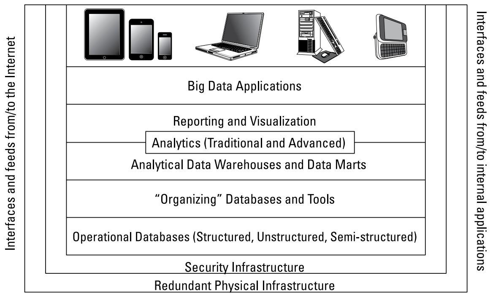

Part I: Getting started with Big Data
- In Part I ...
- Trace the evolution of data management
- Define big data and its technology components
- Understand the different types of big data
- Integrate structured and unstructured data
- Understand the difference between real-time and non real-time data
- Scale your big data operation with distributed computing
Chapter 1: Grasping the Fundamentals of Big Data
- In Chapter 1 ...
- Looking at a history of data management
- Understanding why big data matters to business
- Applying big data to business effectiveness
- Defining the foundational elements of big data
- Examining bid data's role in the future
Scenario
- Emergence of structured data and unstructured data make data management become harder and out of control
- There are various sources of data generated by machine (sensors), human (social media), and website interactions (click-stream)
- Companies want to make sense of the intersection of all theses different types of data, in order to make better decision
Definition
- Big data
Big data is a combination of old and new technologies that helps companies gian actionable insight.
Big data is the capability to manage a huge volume of disparate data, at the right speed, and within the right time frame to allow real-time analysis and reaction.
- Characteristics
- Large Volumes of data
- High Velocity of data
- Wide Variety of data
- Require Veracity of data
Causality Relationship
Problem: Data was stored in flat files without any structure
Solution: Relational data model and relational database anagement system emerged that imposed structure
Problem: The increasing volume of data resulted in high cost and low performance (slow access, duplicated data)
Solution: Entity Relationship (ER) model emerged
Problem: Data needed to manage grew out of control
Solution: Data warehouse emerged - analyze subset of large amounts of structured to focus on a particular area of the business
Problem: Data warehouse is too complex and large
Solution: Data marts emerged that focused on specific business issues
Problem: Huge volumes of unstructured or semi-structured data
Solution: Object database management stored the BLOB as an addressable set of pieces
Cause: A convergence of factors including web, virtualization and cloud computing
Effect: Require to focus on managing data sources with an unprecedented amount and variety of data with an unheard-of speed
Cause: Cost of computing cycle and storage has reached a tipping point
Effect: Capability of storing everything needed for analyzing instead of storing snapshots
Architecture
- Cycle of big data management:
- Capture
- Organize
- Integrate
- Analyze
- Act
- Architecture of big data

Open APIs are will be core to any big data architecture
Interfaces exist at every level and between every layer of stack
- Redundant physical infrastructure
- Security infrastructure
- Operational data sources
Fundamental to the operation and scalability of a big data architecture
Support an unanticipated volume of data => Distributed File System
Redundance is important because the requirement of processing different sources (SaaS)
Encompass a broader set of data sources: structured data (transactions) and unstructured data (customer and social media data)
Emerging approaches to data management: document, graph, columnar and geospatial database architecture, referred to NoSQL database
Technology fundamental
- Virtualization
- Cloud computing
- Parallel processing
- Distributed File System
- In-memory database
- MapReduce
- Big Table
- Hadoop
Designed by Google
Way of efficiently executing a set of functions against a large amount of data in batch mode
Map component: distribute tasks across a large number of systems and handle the placement of the tasks to satisfy load balancing and fail-over
Reduce component: aggregate all the elements back together to provide a result
Developed by Google
A distributed storage system used to manage highly scalable structured data
Includes columns, rows and timestamp
An Apache managed software framework derived from MapReduce and Big Table
Two main components: a massively scalable distributed file system and a massively scalable MapReduce engine that computes results in batch
Chapter 2: Examining Big Data Types
- In Chapter 2 ...
- Identifying structured and unstructured data
- Recognizing real-time and non-real-time requirements for data types
- Integrating data types into a big data environment
Scenario
Definition
Causality Relationship
Problem:
Solution: